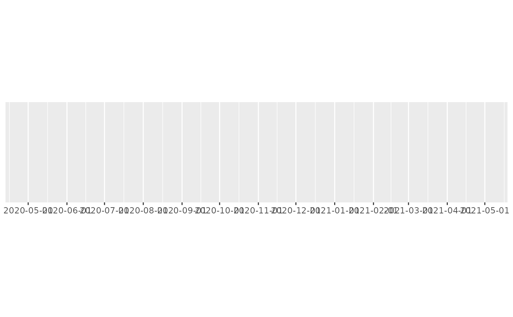
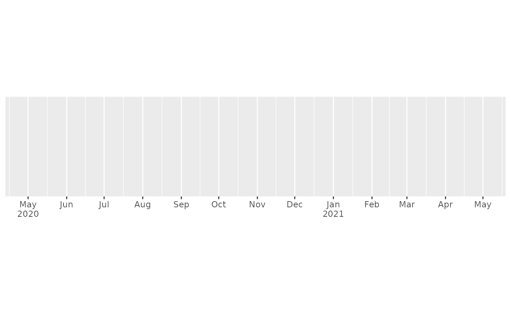

label_date() and label_time() label date/times using date/time format
strings. label_date_short() automatically constructs a short format string
sufficient to uniquely identify labels. It's inspired by matplotlib's
ConciseDateFormatter,
but uses a slightly different approach: ConciseDateFormatter formats
"firsts" (e.g. first day of month, first day of day) specially;
date_short() formats changes (e.g. new month, new year) specially.
label_timespan() is intended to show time passed and adds common time units
suffix to the input (ns, us, ms, s, m, h, d, w).
Usage
label_date(format = "%Y-%m-%d", tz = "UTC", locale = NULL)
label_date_short(
format = c("%Y", "%b", "%d", "%H:%M"),
sep = "\n",
leading = "0",
tz = "UTC",
locale = NULL
)
label_time(format = "%H:%M:%S", tz = "UTC", locale = NULL)
label_timespan(
unit = c("secs", "mins", "hours", "days", "weeks"),
space = FALSE,
...
)Arguments
- format
For
label_date()andlabel_time()a date/time format string using standard POSIX specification. Seestrptime()for details.For
label_date_short()a character vector of length 4 giving the format components to use for year, month, day, and hour respectively.- tz
a time zone name, see
timezones(). Defaults to UTC- locale
Locale to use when for day and month names. The default uses the current locale. Setting this argument requires stringi, and you can see a complete list of supported locales with
stringi::stri_locale_list().- sep
Separator to use when combining date formats into a single string.
- leading
A string to replace leading zeroes with. Can be
""to disable leading characters or"\u2007"for figure-spaces.- unit
The unit used to interpret numeric input
- space
Add a space before the time unit?
- ...
Arguments passed on to
numberaccuracyA number to round to. Use (e.g.)
0.01to show 2 decimal places of precision. IfNULL, the default, uses a heuristic that should ensure breaks have the minimum number of digits needed to show the difference between adjacent values.Applied to rescaled data.
scaleA scaling factor:
xwill be multiplied byscalebefore formatting. This is useful if the underlying data is very small or very large.prefixAdditional text to display before the number. The suffix is applied to absolute value before
style_positiveandstyle_negativeare processed so thatprefix = "$"will yield (e.g.)-$1and($1).suffixAdditional text to display after the number.
big.markCharacter used between every 3 digits to separate thousands. The default (
NULL) retrieves the setting from the number options.decimal.markThe character to be used to indicate the numeric decimal point. The default (
NULL) retrieves the setting from the number options.style_positiveA string that determines the style of positive numbers:
"none"(the default): no change, e.g.1."plus": preceded by+, e.g.+1."space": preceded by a Unicode "figure space", i.e., a space equally as wide as a number or+. Compared to"none", adding a figure space can ensure numbers remain properly aligned when they are left- or right-justified.
The default (
NULL) retrieves the setting from the number options.style_negativeA string that determines the style of negative numbers:
"hyphen"(the default): preceded by a standard hyphen-, e.g.-1."minus", uses a proper Unicode minus symbol. This is a typographical nicety that ensures-aligns with the horizontal bar of the the horizontal bar of+."parens", wrapped in parentheses, e.g.(1).
The default (
NULL) retrieves the setting from the number options.trimLogical, if
FALSE, values are right-justified to a common width (seebase::format()).
Value
All label_() functions return a "labelling" function, i.e. a function that
takes a vector x and returns a character vector of length(x) giving a
label for each input value.
Labelling functions are designed to be used with the labels argument of
ggplot2 scales. The examples demonstrate their use with x scales, but
they work similarly for all scales, including those that generate legends
rather than axes.
Examples
date_range <- function(start, days) {
start <- as.POSIXct(start)
c(start, start + days * 24 * 60 * 60)
}
two_months <- date_range("2020-05-01", 60)
demo_datetime(two_months)
#> scale_x_datetime()

demo_datetime(two_months, labels = label_date("%m/%d"))
#> scale_x_datetime(labels = label_date("%m/%d"))

demo_datetime(two_months, labels = label_date("%e %b", locale = "fr"))
#> scale_x_datetime(labels = label_date("%e %b", locale = "fr"))

demo_datetime(two_months, labels = label_date("%e %B", locale = "es"))
#> scale_x_datetime(labels = label_date("%e %B", locale = "es"))

# ggplot2 provides a short-hand:
demo_datetime(two_months, date_labels = "%m/%d")
#> scale_x_datetime(date_labels = "%m/%d")

# An alternative labelling system is label_date_short()
demo_datetime(two_months, date_breaks = "7 days", labels = label_date_short())
#> scale_x_datetime(date_breaks = "7 days", labels = label_date_short())

# This is particularly effective for dense labels
one_year <- date_range("2020-05-01", 365)
demo_datetime(one_year, date_breaks = "month")
#> scale_x_datetime(date_breaks = "month")

demo_datetime(one_year, date_breaks = "month", labels = label_date_short())
#> scale_x_datetime(date_breaks = "month", labels = label_date_short())
